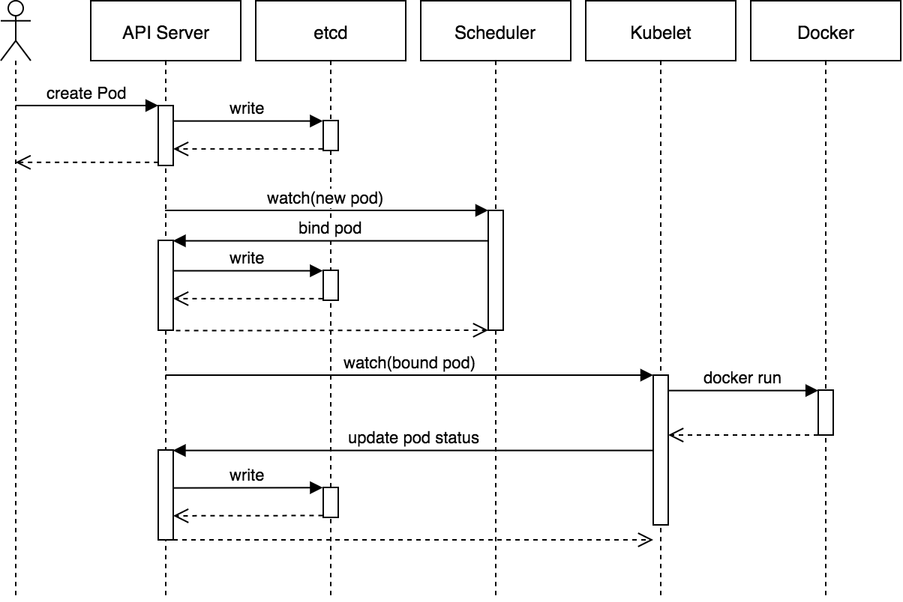

Random notes about random stuff concerning kubernets. Here goes.
It can be beneficial to divide the componenets of Kubernetes into Software and Hardware. So let's start with the hardware.
Hardware#
A kubernets cluster is the sum of all kubernetes nodes. A node will likely be a physical machine or a virtual machine in a datacenter. A program can run on any of the nodes. It can change, so the program should not be storing data on a specific node, because the program might end up running on another node. To store data persistently Kubernetes uses Persistent volumes. This can be a local or a cloud drive. Think of it has an external harddrive that you plug into your cluster. Persistent volumes can be mounted to the kubernetes kluster, at which point it is accessible from all nodes.
Software#
Programs running in the kubernetes klusters are package in containers. The most common and popular one is of course Docker. You usually have one service per container.
Pods#
Containers are run in Pods. If you application becomes really popular, and can't handle the load, you can simply configure your Pod to have more replicas. Pods can hold serveral containers, but it might be better to just have one container in each pod. Since you might want to scale up only one container, and not all the other containers in the pod. You might waste a lot of resources if you scale up a Pod that containes containers that does not need to be scaled up.
Deployment#
Deployment is an abstraction that defines how many replicas of pods you want. Using deployment you will not deal with pods directly.
Ingress#
Kubernetes provides a firewall between the outside of the kluster and the inside. However between the pods there are not default firewalls.
Admission controller / PodSecuriyPolicy#
Admission controller sits between the client and the master-api, it kind of works as a filter and a check. The most important admission controller, from a security perspective, is PodSecurityPolicy.
You can list the PSP by running this command:
kubectl get psp -A
- Read the specifications of a specific PSP
kubectl describe psp privilege
So, how do we implement a PSP? It involved three steps: 1. Create PSP 2. Create a Role that is associated with the PSP 3. Create a Rolebinding that binds the Role to a user, serviceaccount or group.
After that the PSP will be implmented for those specific users that are associated through the rolebinding. So, PSP is not set in the manifest file of pod or deployment. The PSP is instead associated to a user through the rolebinding.
Setting up a kubernetes cluster in GCLoud#
After you have installed GCloud CLI, enabled billing,, and Enabled Kubernets API for your specific project you can create a kluster like this:
gcloud container clusters create my-cluster --zone us-west1-a
You can start to manage your cluster with kubectl, but first you need to setup credentials to do it:
gcloud container clusters get-credentials my-cluster --zone us-west1-a --project kuberntest
If you go to the gcloud console you can see that the Kubernetes cluster is created. And if you go to Computer you can see three VM instances created, these are your nodes. If you want to remove them you should do that through kubernetes and not though gcloud, because if you remove those VMs the cluster will just spin up new VMs.
Now you can deploy a service to your kluster with the following command
Where gitea.yaml is a yaml-config file, which incluldes a docker-image from dockerhub.
kubectl apply -f gitea.yaml
The file looks like this:
apiVersion: v1
kind: Pod
metadata:
name: gitea-pod
spec:
containers:
- name: gitea-container
image: gitea/gitea:1.4
You can now check your pods with this command:
kubectl get pods
Components#
This image describes the components of kubernetes pretty well:

Some interesting things to note here is that the API server is the only component that should talk to etcd.
Etcd#
Etcd contains all the state of the cluster. It contains information, such as cloud metadata, credentials. It is a key-value database. Etcd is the final word of the state of cluster. So if you have write priviliges to the etcd database you basically own the cluster.
Api-server#
If you control the api-server, either through a shell or with a user with high privilige access you have a high degree of control over the cluster.
Kubelet#
Kubelet has its own API, and with access to it you can perform a lot of actions. Kubelet has historically been used in a lot of attacks.
Lifecycle of a POD#
This image describes pretty well the lifecycle of a pod

- kubectl or any other API client submits the Pod spec to the API server.
- The API server writes the Pod object to the etcd data store. Once the write is successful, an acknowledgment is sent back to API server and to the client.
- The API server now reflects the change in state of etcd.
- All Kubernetes components use watches to keep checking API server for relevant changes.
- In this case, the kube-scheduler (via its watcher) sees that a new Pod object is created on API server but is not bound to any node.
- kube-scheduler assigns a node to the pod and updates the API server.
- This change is then propagated to the etcd data store. The API server also reflects this node assignment on its Pod object.
- Kubelet on every node also runs watchers who keep watching API server. Kubelet on the destination node sees that a new Pod is assigned to it.
- Kubelet starts the pod on its node by calling Docker and updates the container state back to the API server.
- The API server persists the pod state into etcd.
- Once etcd sends the acknowledgment of a successful write, the API server sends an acknowledgment back to kubelet indicating that the event is accepted.
Understanding IP-addresses#
- ExternalIP: An endpoint which can be accessed
- ClusterIP: A Service is created to have a common IP for a service. Since the Pod ips are ephemeral.The service ip is sometimes called ClusterIP.